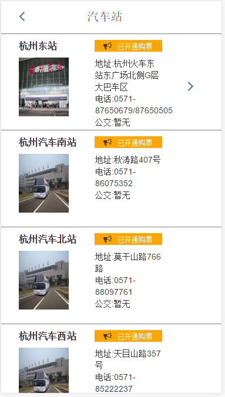
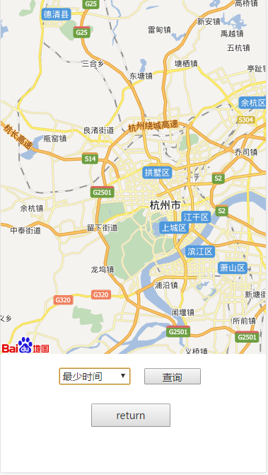

项目ppt演示
项目名称：买买买票
组员：何进 郑成力 李风纬 张梦婕 余欣
作品功能
为旅客提供汽车票网上购票、汽车票余票查询、汽车票在线咨询、汽车时刻表查询和汽车站信息查询等综合性服务。
项目分工
项目主要分为‘首页’，‘活动’，‘订单’，‘我的’四大板块，各个板块不仅有自己独特功能，也紧密联系
- ‘首页’及相关功能: 张梦婕 余欣
- ‘活动’及相关功能: 郑成力
- ‘订单’及相关功能: 何 进
- ‘我的’及相关功能: 李风纬
首页
负责人：张梦婕 余欣
首页板块展示了软件基本信息
Basement Level 1
进入首页
Basement Level 2
输入起始地址
Basement Level 3
点击搜索汽车站

Basement Level 4
相关汽车站信息
Basement Level 5
点击进入汽车站详情
Basement Level 6
评价车站，选择星级确定，或者输入文字信息
Basement Level 7
返回首页
Basement Level 8
搜索汽车票结果
Basement Level 9
点击地图选择路径相关查询
Basement Level 10
点击车票了解详情
Basement Level 11
其他功能待完善
Basement Level 12
That's it, time to go back up.
活动
负责人：郑成力
活动板块是展示现有活动给旅客带来的优惠便捷和欢乐
Basement Level 1
进入活动
Basement Level 2
点击进入活动
Basement Level 3
点击了解活动详情
Basement Level 4
其他功能待完善
Basement Level 5
That's it, time to go back up.
订单
负责人：何进
订单板块展示的是旅客的操作历史纪录
Basement Level 1
进入订单

Basement Level 2
点击全部订单，查看你的订单历史
Basement Level 3
点击订单成功，查看订单详情

Basement Level 4
其他功能待完善
Basement Level 5
That's it, time to go back up.
我的
负责人：李风纬
我的板块展示的是旅客的个人的信息内容

Basement Level 1
进入我的
Basement Level 2
点击登陆，输入您的相关信息
Basement Level 3
点击我的好友，查看您的好友情况
Basement Level 4
其他功能待完善
Basement Level 5
That's it, time to go back up.
项目小结
这是我们这个小组第一次做的一个web项目，项目基本实现了大部分功能，但项目还是存在很多问题，比如界面格式上的统一问题，板块的其他功能实现，以及数据库的链接等。这些都等待着我们去完善，不过也应该给小组每一位成员的辛苦付出一个赞。我们也会在这基础经验上走的更远！